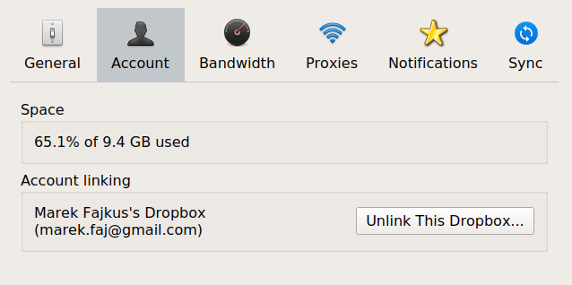
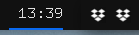

Dealing with Multiple Dropbox Accounts Tiny hack to boost your productivity
It’s pretty common for a company to require its long-term consultants and employees to use all sorts of tools and accounts. On a contrary, the way these products often operate though is that they expect user to have a single account. For organizations, there is usually an ability to create teams - a group of multiple individual accounts. The problem is that this is not exactly how companies like to do things.
Companies often like to provide @company email address and create all other accounts under it. This means that if you have a personal account for any of the service company requires you to use, you’re likely in a situation which most of these apps are not prepared for. Two accounts on a single machine.
Lets, for instance, have a look at Dropbox.

There is no option to add an account without logging-out the existing one. There are some options for teams but you can’t use them if your use-case involves multiple accounts.
However, it must be still possible to have multiple Dropbox accounts for multiple users on a single system, right? How does that work?
Analyzing Dropbox
Dropbox seems to be creating .dropbox directory in to $HOME so lets have a look what is going on there.
$ tree ~/.dropbox
/home/marek/.dropbox
├── command_socket
├── dropbox.pid
├── events
│ ├── store
│ └── store1
├── host.db
├── iface_socket
├── info.json
├── instance1
│ ├── aggregation.dbx
│ ├── config.db
│ ├── config.dbx
│ ├── hostkeys
│ ├── sync
│ │ ├── nucleus.sqlite3
│ │ ├── nucleus.sqlite3-shm
│ │ ├── nucleus.sqlite3-wal
│ │ └── temp
│ │ └── 04625d37a5e6b439.sqlite3
│ └── unlink.db
├── instance_db
│ ├── hostkeys
│ └── instance.dbx
├── logs
│ ├── 0
│ ├── 1
│ │ ├── 1-6999-5ea575c4.tmp
│ │ ├── 1-6ac8-5ea81628.tmp
│ │ └── 1-9231-5ea575c5.tmp
│ └── 1ro
│ └── 1-249f-5db03970.tmp
├── machine_storage
├── metrics
│ └── store.bin
└── unlink.db
11 directories, 24 files
We don’t even need to analyze this too deeply as on a first look it already seems that all the information associated with the account and its state is within this directory.
The first thing that comes to mind is to create a new fake HOME directory, set the HOME environment variable to point to this folder, and then run Dropbox within this environment.
$ mkdir -p ~/Holmusk-Home
$ HOME=$HOME/Holmusk-Home dropbox
And sure enough, Dropbox seems to start the bootstrapping of the new .dropbox folder and, after successful login to the company account, it also starts pulling the data it should.
This means we can simply create a shell script that wraps the dropbox binary in this way. It may be worth mentioning that this solution should work across Linux & MacOS
#!/usr/bin/env bash
set -e
CUSTOM_HOME=$HOME/Holmusk-Home
mkdir -p $CUSTOM_HOME
HOME=$CUSTOM_HOME dropboxAs far as I know, Dropbox doesn’t support Unix like systems other than Linux and MacOS, but if it does, it will surely work for these as well.
Now all that is needed is to chmod +x the script and move it to $PATH. On MacOS it might also be practical to use Automator to wrap the script as an application.

Nix
Since I’m using NixOS I like to do things like this in a nix way. So in fact in my case, I have profile/holmusk.nix file in my Dotfiles and I’m putting things like this in there.
{ config, pkgs, ... }:
let
custom-home = "~/Holmusk-Home";
holmusk-dropbox = with pkgs; writeScriptBin "dropbox-holmusk" ''
#!/usr/bin/env bash
set -e
# create home directory if it doesn't exist
mkdir -p ${custom-home}
# start dropbox for Holmusk team
HOME=${custom-home} ${dropbox}/bin/dropbox
'';
sync-rwe-assets = with pkgs; writeScriptBin "sync-rwe-assets" ''
#!/usr/bin/env bash
set -e
if [[ ! -f package.json ]]; then
echo "This command must be ran from frontend project directory!"
exit 1
fi
PROJECT_NAME=$(${jq}/bin/jq '.name' package.json | sed 's/"//g')
if [[ $PROJECT_NAME != "pi-frontend" ]]; then
echo "This is not RWE project!"
exit 1
fi
cp -r public/assets/theme ${custom-home}/Dropbox\ \(Holmusk\)/RWE\ Design/Assets\ -\ Web
'';
in {
environment.systemPackages = [
holmusk-dropbox
sync-rwe-assets
];
}As you can see, I also have another small script that automates the synchronization of assets between the project and a shared Dropbox folder. My workflow is to export SVG files for UI from Figma, optimize them, and put them to the project assets. I use this script for sharing processed files back to the design team in case they need them. It roughly works like this.
- Check the presence of
package.jsonin the directory. - Check
namevalue inpackage.json- this script is related to the specific project. - Copy files to the
Dropboxfolder.
Wrap Up
Shell scripts are terrible because the shell languages mostly are. Still, it’s the simplest way to automate smaller tasks in your workflow. Also, Nix is awesome.